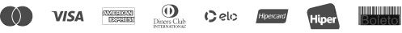

Entenda o porque tantas alunas minhas estão vivendo uma vida livre de dores, sem depender de remédios ou hormônios.
E não entender isso, pode ser o motivo que te impede de vencer essa guerra.
Porque você ainda não aprendeu os fundamentos que vão te levar a viver uma vida sem dores e sem sintomas, de forma natural.
O raciocínio é muito simples:
A endometriose é uma doença inflamatória.
E provavelmente você usa ou já usou hormônios e remédios como tentativa de “tratamento”.
Só que tem um grande problema aí.
Isso só mascara os sintomas e não trata a raiz do problema.
Está errado!
O que você precisa fazer é DESINFLAMAR o seu corpo. Não ficar refém de medicamentos.
A desinflamação faz os sintomas diminuírem drasticamente, até o ponto de desaparecerem.
“Mas afinal, como eu posso desinflamar o meu corpo, Isabel?”
A resposta está no botão abaixo.
Primeiro gostaria que você soubesse que isso não se trata de um gasto, mas sim de um investimento em você mesma.
Continuar sentindo essas dores incapacitantes, esse cansaço, esse mal-estar e esse medo de não conseguir engravidar, NÃO PODE ser uma opção.
E quanto vai custar a imersão?
Eu resolvi fazer diferente da grande maioria dos meus “concorrentes”.
Resolvi fazer algo que todas as mulheres que estejam dispostas, consigam entrar.
A minha intenção não é lucrar em cima de você como outras indústrias por aí.
O meu objetivo aqui é ajudar o máximo de mulheres que eu conseguir.
Por isso, o preço do 1º lote da Imersão vai ser simbólico.
por apenas:
ou 11x de R$ 5,08
Quero Garantir o preço do 1 lote O nosso encontro será ao vivo, no dia 07 de Agosto, às 20:00.
No instante da sua compra, você receberá as informações para acessar a plataforma pelo e-mail. Você também será adicionada no grupo de avisos da Imersão, no WhatsApp.
Você pode adquirir o acesso à Imersão através de cartão de crédito e PIX.
Você tem 7 dias de garantia incondicional. Se você não gostar da Imersão, pode pedir o reembolso.